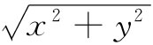
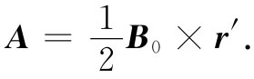
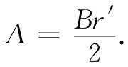

在本章中，我们将继续讨论与恒定电流有关的磁场——静磁学课题。磁场与电流之间由如下的基本方程相联系：
现在我们希望以一种普遍的方式，即不需要任何特殊对称性或直观猜测，就能在数学上解出这些方程。在静电学中，我们曾发现当所有电荷的位置均为已知时存在求场的一种直接方法。人们通过对电荷取积分——比如式（4.25）中的积分——就能简单地算出标势ϕ来。然后，如果还想知道电场，则可对ϕ求微商而得到。现在我们要证明：如果已知所有运动电荷的电流密度j，则会有一种求得磁场B的相应方法。
在静电学中，我们就知道（由于E的旋度始终是零），有可能把E表达成一个标量场ϕ的梯度。现在B的旋度却不 常等于零，因而一般说来不可能把它表达成一梯度。然而，B的散度 却永远为零，这就意味着我们总能把B表达成另一个矢量场的旋度 。因为正如我们以前曾在§2-7中见到的，旋度的散度总等于零。于是，就总能够把B与将被称作A的场互相联系起来，
B=▽×A. （14.3）
或者通过写成分量，则有
既然写出了B=▽×A，就能保证式（14.1）被满足，因为必然有
▽·B=▽·（▽×A）=0.
A这个场被称为矢势 。
你会记得，标势ϕ并未由其定义完全规定。如果你对某一问题已求得了ϕ，你还总能通过加上一常数而找到另一个同样好的势ϕ′：
ϕ′=ϕ+C.
因为梯度▽C为零，所以这个新的势ϕ′会给出相同的电场。因而ϕ′与ϕ代表相同的物理性质。
同样，我们也有可能给出同一磁场的不同矢势A。而且，由于B是由A的微商得到的，因而，若在A上加一常数并不改变任何物理的实质。可是对于A来说，还有更加广阔的活动余地。我们可以对A加进任何场，只要它等于某一标量场的梯度，就不致改变其物理情况。这可证明如下。假设对某个实际问题我们已有了一个A，它正确地给出了磁场B，并试问在什么情况下某一个新的矢势A′才能在代入式（14.3）中时，会给出同一个场 B。于是，A和A′必定具有相同的旋度：
B=▽×A′=▽×A.
因此， ▽×A′-▽×A=▽×（A′-A）=0.
但若一矢量的旋度为零，则它必然是某一标量场——比如说ψ——的梯度，因而A′-A=▽ψ。这就意味着，若A为适合于某一问题的矢势，则不论对于任何ψ，
A′=A+▽ψ （14.5）
仍将是一个同样令人满意的矢势，因为它导致相同的场B。
这样做往往很方便，即任意使A受另一条件限制，因而将其某些“活动范围”扣除出去（正如我们经常选取在无限远处的标势ϕ等于零也很方便一样）。例如，可以任意规定A的散度必须是什么而对A加以限制。我们总能够这样做，而不致影响B。这是因为：虽然A′和A都具有同一旋度，从而给出了相同的B，但它们却不需要具有相同的散度。事实上，▽·A′=▽·A+▽2 ψ，因而通过选取某一适当的ψ，就可以使▽·A′成为我们所希望要的任何东西。
对于▽·A到底应该如何选取呢？这一选择应为获得最大的数学方便而做出，并将取决于我们所要解决的问题。对于静磁学 来说，我们将做这种简单选择：
▽·A=0 （14.6）
（往后，当考虑电动力学时。将改变这种选择）。于是，目前我们对A的完整定义 [1] 为：
▽×A=B 和 ▽·A=0.
为了对矢势得到一些经验，让我们首先看看对于匀强磁场B0 来说，它的矢势是什么。选取z轴作为B0 的方向，我们就应有：
经检查可知这些方程的一个可能解为：
Ay =xB0 ； Ax =0； Az =0.
或者，我们也同样可以取：
Ax =-yB0 ； Ay =0； Az =0.
还有另一个解则是上述两个解的线性组合：
很明显，对于任一特定场B来说，矢势A有许多可能性，因而不是唯一的。
上面第三个解，即式（14.8），具有某些有趣的特性。由于其x分量正比于-y，而其y分量正比于+x，所以A必定垂直于与z轴同方向的矢量。我们把这个矢量叫作r′（之所以加上一撇是为了要提醒我们，并不是 从原点出发的一个位移矢量）。并且，A的大小仍正比于 ，因而也就正比于r′。所以（对于我们的匀强磁场来说）A可以简单写成
 （14.9）
这矢势A具有B0 r′/2的量值并绕着z轴旋转，如图14-1所示。例如，若B场为螺线管内的轴向磁场，则这个矢势便和螺线管上的电流一样沿着同一指向环行。
图14-1 一个沿z方向的匀强磁场B对应于绕着z轴旋转而又具有大小为A=Br′/2的矢势A（r′是从z轴出发的位移）
关于一匀强场的矢势也可由另一种方式获得。A绕任一闭合回路Γ的环流与▽×A的面积分可以由斯托克斯定理、即式（3.38）相联系：
∮Γ A·ds=∫在Γ内 （▽×A）·nda. （14.10）
但右边的积分等于B穿过回路的通量，因而
∮Γ A·ds=∫在Γ内 B·nda. （14.11）
因此，A绕任一 回路的环流等于B穿过该回路的通量。如果在与匀强场B垂直的平面上取一半径为r′的圆形回路，则通量恰恰为
πr′2 B.
如果把原点选取在对称轴上，则可以认为A沿着圆周并且仅仅是r′的函数，所以A的环流将为
∮A·ds=2πr′A=πr′2 B.
同上面一样，我们得到

在刚才所述的例子中，我们已从磁场算出了矢势，这与正常做法恰好相反。在复杂问题中，往往先解得矢势，然后才由它来确定磁场，那就比较容易。接下来，我们将说明如何才能做到这一点。